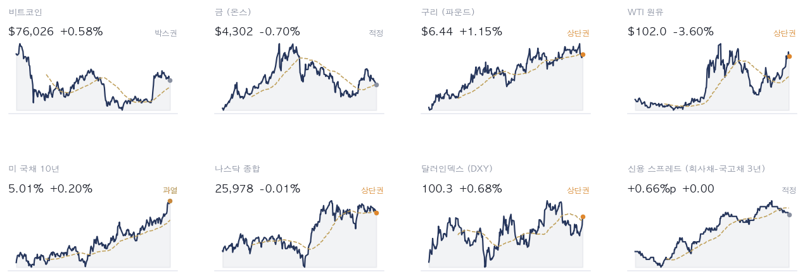
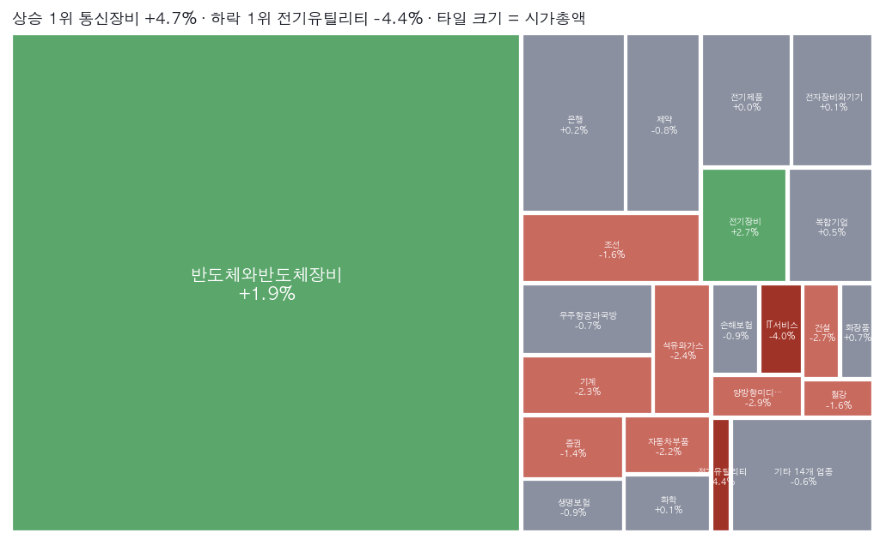
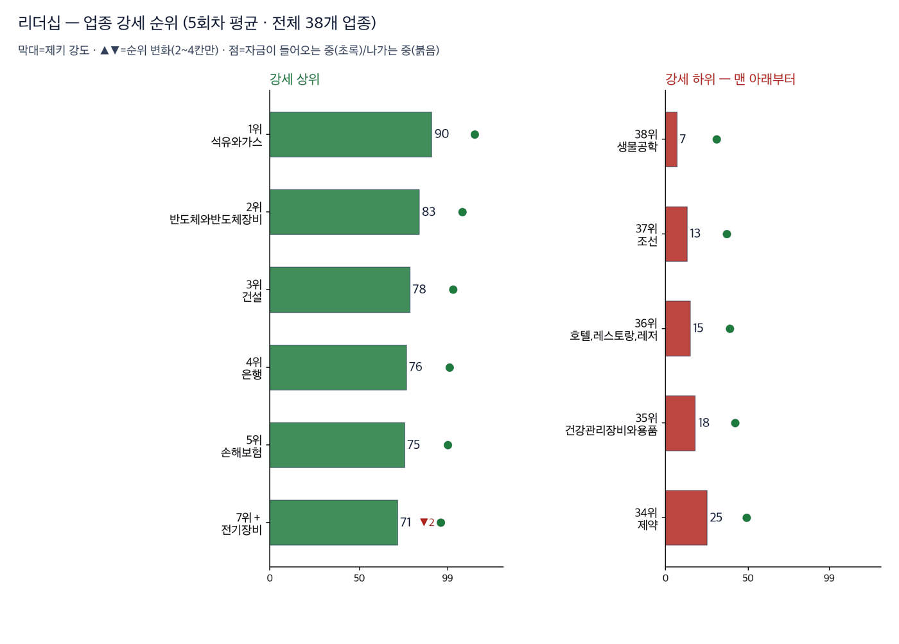
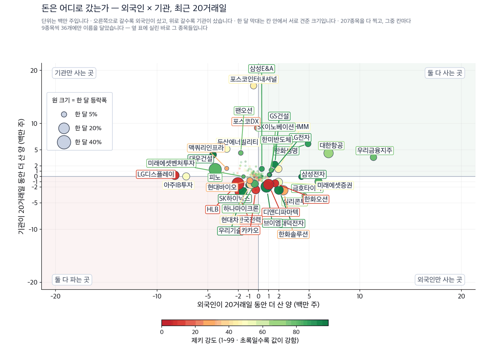
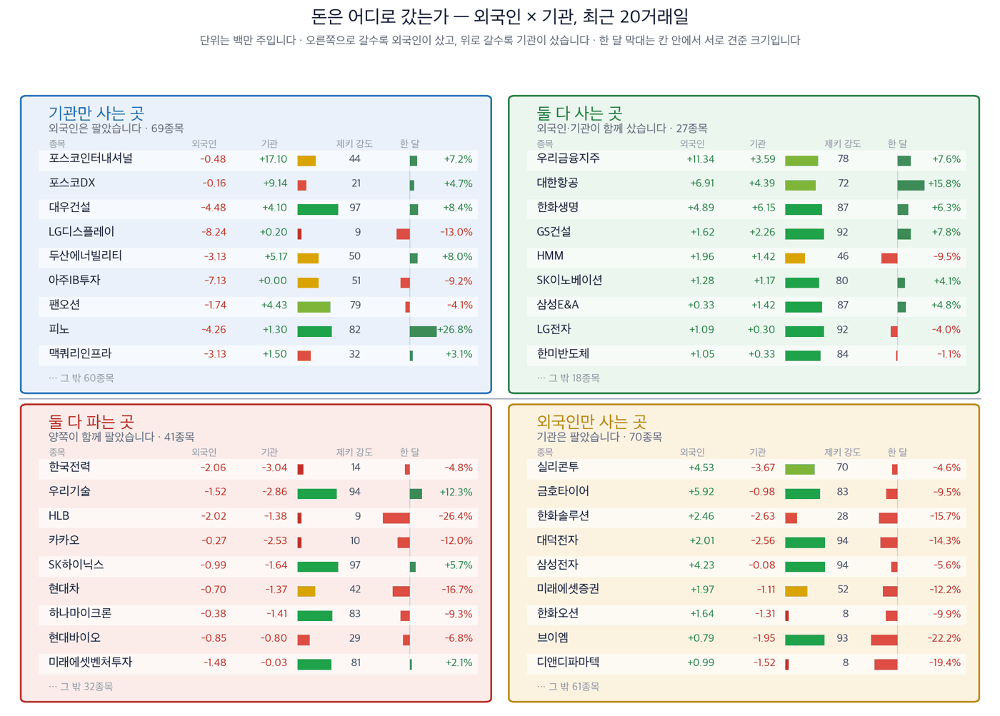
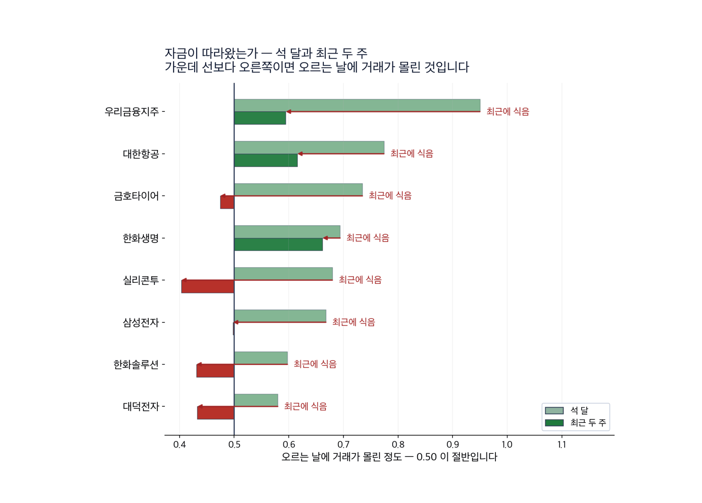
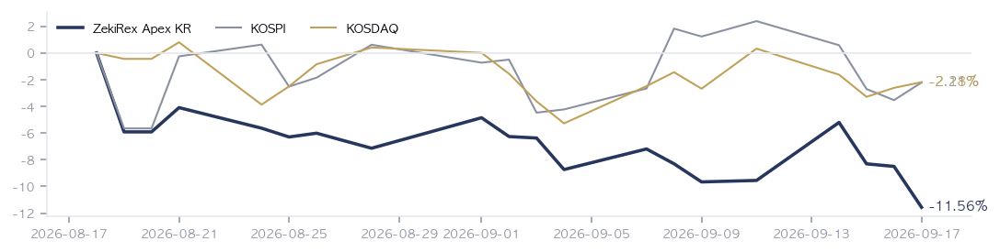

|
ZekiRex™ Apex KR — 2026년 9월 17일
오늘의 판단 · 1/2
데이터 기준 9/16 (KST) 종가 · 간밤 뉴욕 9/16 종가(현지시간) |
ZekiRex™ |
|
|
|
THE REX CALL
연준이 인하가 아니라 인상으로 방향을 바꿨고, 서울은 그 전에 마감했습니다.
자이에스앤디이 손절가를 밑돌아 전량 팔았습니다. 실현 손실은 -8.56%입니다. 빈 자리는 타이거일렉으로 채웠고 비중은 총자산의 24.5%입니다.
오늘 반드시 알아야 할 것
1. 연준이 기준금리를 연 3.75~4.00%로 0.25%포인트 올렸습니다. 2023년 7월 이후 첫 인상이고 표결은 만장일치였습니다. 중요한 것은 인상 자체가 아니라 점도표입니다. 올해 말 중간값이 6월 3.8%에서 4.1%로, 이날 정한 상단보다 높아졌습니다. 이자로 값을 매기던 종목의 셈이 먼저 바뀝니다. (머니투데이·연합뉴스) 2. 미국 10년물 국채금리가 5%를 다시 넘었습니다. 회견 뒤 5.014%를 기록했습니다. 장기 금리가 이 자리에 있으면 먼 미래의 이익부터 값이 깎입니다. 이익이 올해 나는 회사와 3년 뒤에 나는 회사를 같은 기준으로 보시면 안 되는 구간입니다. (머니투데이) 3. 국고채 3년물이 4%를 넘었고 원화는 2주 만의 최저로 내렸습니다. 9월 15일 마감 기준 외국인은 1조7055억원을 순매도했습니다. 조달 비용과 환율이 같은 쪽으로 밀면 개장 초 외국인 수급이 얇아집니다. 지수 전체보다 업종 사이의 값 차이가 먼저 벌어집니다. (경향신문·머니투데이) 4. 국제유가가 9월 16일 3% 안팎 내렸습니다. 사우디아라비아의 우회 공급 소식이 이유이고, 이틀 동안 오른 뒤의 되돌림입니다. 원가는 한 방향으로만 가지 않습니다. 정유와 항공을 보고 계시다면 이틀 치 급등을 기준으로 삼으시면 안 됩니다. (연합뉴스·이데일리) 5. 인텔과 SK하이닉스가 미국 안에서 메모리를 함께 생산하는 방안을 논의 중입니다. 이 보도에 인텔 주가가 4% 올랐습니다. 성사되면 한국의 메모리 생산이 처음으로 미국 안으로 들어갑니다. 아직 확정된 것은 없고 보도 단계이므로, 공시가 나오기 전까지는 재료가 아니라 관측입니다. (이데일리)
| |
 이 그림 읽는 법 | 켜진 등 | 오늘의 국면입니다. 초록은 매수 우위, 노랑은 관망, 빨강은 매수 자제입니다. | | 채워진 칸 | 7가지 조건 중 몇 개를 통과했는지입니다. 칸이 많이 찰수록 시장 구조가 튼튼합니다. | | 칸이 다 찼는데 노랑·빨강이면 | 다른 이유로 한 단계 낮춘 것입니다. 그림 아래에 그 이유를 적었습니다. |
|
최근 10거래일 국면 추이 (왼쪽이 과거) 방향 — 코스피와 코스닥 모두 빨간불입니다. 코스피는 7가지 가운데 3가지, 코스닥은 2가지를 통과했습니다. 저희 규칙에서 이 신호등은 매수를 막지 않습니다. 위험은 종목마다 손절가로 관리합니다.
| |
| 오늘의 조치 | | 매수 | 타이거일렉 219130 | | 매도 | 자이에스앤디 317400 — 하드 손절 −8% 도달 |
|
| 오늘 반드시 알아야 할 것 |
|
서울이 오른 9월 16일 종가에는 연준 결정이 들어 있지 않습니다
9월 16일 서울은 두 지수가 함께 올랐습니다. 코스피가 +1.37% 올라 6,718, 코스닥이 +0.44% 올라 816로 마쳤습니다. 연방공개시장위원회 결정은 미국 9월 16일 14:00 ET(현지시간)에 나왔습니다. 서울 시각으로는 9월 17일 03:00 KST이고, 서울이 닫히고 11시간 30분 뒤입니다. 그 상승분에는 결정이 들어 있지 않습니다. 왜 그런가. 결정이 서울에 넘어오는 길은 2가지입니다. 먼저 조달 비용입니다. 국고채 금리는 연고점을 새로 썼습니다. 미국 10년물이 5% 위에 머무는 동안 국고채도 같은 방향으로 끌려갑니다. 다음은 환율입니다. 원화는 결정을 앞두고 2주 만의 최저로 내려 있었습니다. 두 힘이 같은 쪽으로 밀면 개장 초 외국인 수급이 얇아집니다. 9월 15일 마감 기준 외국인 순매도는 1조7055억원이었습니다. 반대 방향의 힘도 하나 있습니다. 국제유가가 9월 16일 3% 안팎 내렸습니다. 다음에 무엇이. 9월 16일 저희 선별에서는 616종목 가운데 16종목이 모든 관문을 통과했습니다. 그 가운데 3곳은 품질 하한에 걸려 제외했습니다. 나머지도 살 자리가 없었습니다. 포트폴리오 슬롯을 이미 100% 쓰고 있기 때문입니다. 통과 종목이 늘어난 것은 좋은 소식이 아니라 거르개의 결과입니다.
그래서 우리는: 은행이나 보험을 갖고 계시다면 금리 상승이 곧 이익이라는 셈을 다시 보실 자리입니다. 조달 금리가 함께 오르면 예대마진은 생각만큼 넓어지지 않습니다. 수출로 버는 회사를 갖고 계시다면 같은 환율이 환산 단계에서 유리하게 들어옵니다. 다만 원화 약세가 외국인 순매도와 함께 오면 그 이득은 주가에 늦게 반영됩니다. 저희 장부에도 같은 힘이 왔습니다. 코스피가 오른 9월 16일에 보유 4종목이 모두 내렸고, 자이에스앤디은 손절가를 밑돌아 8.56% 손실로 팔렸습니다. 지수가 오른 날 장부가 내린 것은 업종이 아니라 종목의 문제입니다.
Rex Lens™
| |
| 그 밖에 알아야 할 것 | | 러시아산 에너지 구매국에 최대 100% 관세 · 러시아산 석유와 가스를 사들이는 나라에 관세를 물릴 권한을 대통령에게 주는 법안입니다. 하원이 214대 211로 본회의에 넘겼습니다. (Deutsche Welle · The Hindu) → 통과되면 관세가 무역수지가 아니라 에너지를 어디서 사는지에 따라 매겨집니다. 인도와 거래하는 수출업체를 보고 계시다면 계약 통화와 선적 시점을 먼저 확인하실 자리입니다. | | 구글과 엔비디아, 전력을 조절하는 데이터센터 연합 · 구글과 엔비디아가 신생기업 에메랄드에이아이와 함께 전력 수요를 상황에 따라 줄였다 늘릴 수 있는 데이터센터를 뒷받침하는 연합을 출범시켰습니다. (Axios) → 전력이 증설의 병목이라면 전기를 양보할 수 있는 시설이 먼저 허가를 받습니다. 전기장비는 저희 업종 순위 7위입니다. | | 10차 석유 최고가격, 9월 18일 발표해 19일 적용 · 정부가 9월 18일 발표해 19일부터 적용하는 10차 최고가격도 동결될 가능성이 큽니다. 10차례 묶이는 동안 정유사 손실보전은 아직 0원입니다. (동아일보 · 머니투데이) → 국내 휘발유값이 17주째 내린 것은 시장이 아니라 제도의 결과입니다. 정유주의 변수는 유가가 아니라 이 제도가 풀리는 시점입니다. | | 보잉, 737맥스 생산 정상화 시점을 뒤로 · 켈리 오트버그 보잉 최고경영자가 737맥스 생산 안정화가 예상보다 늦어지고 있다고 밝혔습니다. 모건스탠리 산업 회의에서 나온 말이고, 그 자리에서 주가가 5%대 내렸습니다. (이데일리) → 납기가 뒤로 밀리면 국내 항공기 부품업체의 매출 인식도 함께 늦어집니다. 우주항공과국방을 갖고 계시다면 수주 잔고가 아니라 인도 일정을 보셔야 합니다. | | 송전망 확충안, 철탑 40% 줄이고 주민 보상은 2배 · 정부가 첨단산업의 전력 수요에 맞춰 송전망을 늘리는 방안을 국무회의에 보고했습니다. 선로를 통합하고 땅에 묻어 새 철탑은 최대 40% 줄입니다. 주민 직접지원 비율은 50%에서 100%로 올립니다. (조선일보) → 전력망이 풀려야 국내 데이터센터 투자가 실제 설비로 이어집니다. 송전 공사가 앞당겨지면 전선과 변압기를 만드는 회사의 수주가 먼저 움직입니다. |
| 한국과 미국을 잇는 것: 미국 9월 16일 14:00 ET(현지시간) 뉴욕에서 바뀐 것은 금리의 높이가 아니라 방향입니다. 연준이 인하 쪽 문을 닫았기 때문에 서울에는 조달 비용과 환율 2가지로 넘어옵니다. 국고채 금리는 이미 연고점을 새로 썼고, 원화는 2주 만의 최저에 있었습니다. 두 힘이 같은 쪽으로 밀면 지수 전체보다 업종 사이의 값 차이가 먼저 벌어집니다. |
| 종목 | 비중 | 평가금액 | 평가손익 | 현재가 | 손절가 | 여유 | 보유일 | 다음 이벤트 | | 지엔씨에너지 | 25% | ₩222,208,350 | −₩14,751,450 | ₩47,450 | ₩46,552 | +1.9% | 5일 | — | | 현대해상 | 25% | ₩223,559,600 | −₩13,395,100 | ₩48,400 | ₩47,196 | +2.6% | 5일 | — | | GS | 25% | ₩221,797,400 | −₩9,556,800 | ₩111,400 | ₩106,904 | +4.2% | 23일 | — | | 타이거일렉 | 25% | ₩216,825,000 | +₩0 | ₩73,500 | ₩67,620 | +8.7% | -1일 | — | | 현금 | — | ₩3,150 | 아직 투자하지 않은 돈입니다 |
계좌 요약 | 시작 자본 | ₩1,000,000,000 | 2026-08-18 설정 | | 실현 손익 | −₩77,903,150 | 판 종목에서 확정된 금액 | | 평가 손익 | −₩37,703,350 | 들고 있는 종목의 장부상 손익 | | 현재 평가액 | ₩884,393,500 | 시작 대비 −11.56% | | 최고 평가액 | ₩1,000,000,000 | 지금은 고점 대비 −11.56% |
시작 자본에 실현 손익과 평가 손익을 더하면 현재 평가액이 됩니다. |
| Rex Korea Best — 이 뉴스레터에 실린 이름들의 성적표 | 무엇인가. 이 뉴스레터에 이름이 오른 회사들을 모아 만든 지수입니다. 관문을 통과한 종목과 포트폴리오 보유 종목을 합쳐 최대 스물다섯 곳까지, 모두 같은 비중으로 담습니다. 명단은 판이 나가는 날 그대로 적어 두고 뒤에 고치지 않습니다 — 지나고 나서 좋았던 것만 골라 넣으면 어떤 성적표도 좋아 보이기 때문입니다. 무엇을 위한 것인가. 저희가 지면에 적은 이름이 실제로 값을 하는지 숫자로 남기기 위해서입니다. 그래서 같은 기간 코스피 · 코스닥과 나란히 놓고, 사고파는 비용을 뺀 뒤의 숫자도 함께 싣습니다. 숫자 읽는 법. 제키 강도는 같은 기간 다른 주식과 견준 주가의 힘을 100점 만점으로 매긴 것입니다. 100점에 가까울수록 많이 오른 쪽입니다. 아닌 것. 살 수 있는 상품이 아니고, 추천도 아니며, 저희 계좌의 성적도 아닙니다. | | Rex Korea Best | −1.76% | 비용 전 | | 같은 것, 비용 차감 후 | −1.87% | | | 코스피 | +0.50% | | | 코스닥 | +1.14% | |
2거래일치입니다. 짧은 구간은 운과 실력을 가르지 못하므로 120거래일이 쌓이기 전까지는 이 숫자로 판단하지 마십시오. 많이 오른 쪽 | 코스맥스 192820 | +2.37% | | 샘씨엔에스 252990 | +1.41% — 값은 지난 1년 중 가장 높습니다. | | 팬오션 028670 | +1.40% |
많이 내린 쪽 | 자이에스앤디 317400 | −5.90% | | 지엔씨에너지 119850 | −3.26% — 평소보다 훨씬 적게 거래됐습니다. | | GS 078930 | −2.96% |
새로 들어온 종목 | 타이거일렉 219130 | 저희 조건을 새로 갖춰 명단에 올랐습니다 |
빠진 종목 | 에이피알 278470 | 9월 14일부터 2거래일, −3.58%. 저희 조건을 더는 갖추지 못했습니다 |
|
| 관문을 통과한 종목 — 자리가 없어 담지 못한 이름들 | | 금융 4 | | 000370 한화손해보험 | RS 84 | ₩8,170 | | 055550 신한지주 | RS 82 | ₩112,600 | | 086790 하나금융지주 | RS 82 | ₩137,200 | | 105560 KB금융 | RS 81 | ₩177,000 | | 반도체·하드웨어 2 | | 252990 샘씨엔에스 | RS 91 | ₩16,590 | | 098120 마이크로컨텍솔 | RS 90 | ₩51,700 | | 산업재·인프라 1 | | 028670 팬오션 | RS 80 | ₩5,790 | | 소비 1 | | 192820 코스맥스 | RS 92 | ₩280,500 | | 기타 1 | | 317400 자이에스앤디 | RS 98 | ₩10,360 |
| 왜 못 담았나. 자리는 넷뿐이고 각 자리에 총자산 25%가 들어갑니다 — 한 종목이 −8%에 걸려도 계좌 전체로는 2% 손실이 되도록 맞춘 구조입니다. 자리를 비우는 길은 손절과 오실레이터 이탈 둘뿐이라, 더 좋은 후보가 나와도 갈아타지 않습니다.
이 목록이 뜻하는 것. 16개가 조건을 통과했고 그중 보유 중인 종목을 뺀 9개가 대기 중입니다. RS는 80~98입니다. 우리 4자리는 반도체·하드웨어 2, 에너지·정유 1, 금융 1로 나뉘어 있고 가장 큰 쪽이 반도체·하드웨어입니다 — 그래서 하루 등락이 지수와 평균 2.3%p 벌어졌고, 가장 크게 갈린 9/7 세션에는 코스피 보다 5.6%p 더 내렸습니다. 자리가 하나 열리면 이 순서의 맨 위부터 검토합니다. 매수 추천이 아닙니다. |
| 매수 금액 산출 근거 | | 자리는 넷이고 각 자리에 계좌의 25%를 넣습니다. 한 종목이 손절가(−8%)를 밑돌아도 계좌 전체로는 2% 안팎의 손실이 되도록 맞춘 구조입니다. 아래는 이번 주문이 그 규칙대로였는지 검산할 수 있게 적은 것입니다. | 타이거일렉 219130 | 계좌 전체 평가액 | ₩884,393,500 | | 한 자리에 넣기로 한 금액 (25%) | ₩221,098,375 | | 실제 매수한 금액 | ₩216,828,150 | | 이보다 작으면 사지 않는 하한 (8%) | ₩70,751,480 | | 손절에 걸리면 계좌가 입는 손실 | 2.0% |
= 2,950주 주문 실행 |
조건은 통과했지만 품질 하한에서 걸린 종목 | 롯데렌탈 089860 — 재무 등급 SMR E — 품질 하한 미달 | | 금호타이어 073240 — 품질 하한 미달 | | DB손해보험 005830 — 품질 하한 미달 |
|
| 핵심 지표 | 코스피 6,718 +1.37% · 고점 −26.3% 52주 최고가보다 26.3% 아래에 있습니다. 9월 16일 상승은 연준 결정 전에 만들어진 값이므로, 9월 17일 개장이 첫 반응입니다. 박스권 | 코스닥 816 +0.44% · 고점 −33.5% 52주 최고가보다 33.5% 아래로, 코스피보다 더 내려와 있습니다. 금리가 오르는 구간에서 먼 미래의 이익을 파는 쪽이 먼저 깎입니다. 하단권 | 원/달러 ₩1,376.70 ₩1,376.70입니다. 연준이 인상 쪽으로 방향을 바꾼 만큼, 한미 금리차가 좁혀지지 않으면 이 방향이 이어집니다. 하단권 | 국고채 3년 4.05% 4.05%입니다. 그 문턱을 넘은 뒤로 연고점 부근이고, 이 수준이 이어지면 한국은행의 다음 회의가 시장의 기준이 됩니다. 과열 | S&P 500 7,552 상단권 | 포트폴리오 -11.56% 현금 0% · 보유 4종목 8월 18일 시작 이후 -11.56%이고 코스피는 -2.21%입니다. 코스피보다 뒤에 있습니다. 현금 비중 0%이므로 다음 매수는 어느 한 종목이 손절가를 밑돈 뒤에야 가능합니다. 설정 이후 |
|
| 한 줄 정리: 9월 16일 서울은 두 지수가 함께 올랐습니다. 코스피가 +1.37% 올라 6,718, 코스닥이 +0.44% 올라 816로 마쳤습니다. 연준 결정은 미국 9월 16일(현지시간) 서울이 닫힌 뒤에 나왔습니다. 그 결과는 9월 17일 개장이 받습니다. |
|
|
|
판단의 근거 · 2/2
데이터 기준 9/16 (KST) 종가 · 간밤 뉴욕 9/16 종가(현지시간) |
ZekiRex™ |
|
|
 Rex Pulse™ — 지수·가상자산 / 통화 / 원자재 / 채권 16종, 1년 흐름과 50일 평균값(점선) · 기준 한국 9/16 종가, 뉴욕 9/16 종가(현지시간) |
미국 10년물이 5.01%로 5% 위에 있습니다. 달러인덱스는 100.3, 원·달러는 ₩1,376.70로 +0.95%입니다. 금리와 달러가 같은 방향이면 원화 자산에서 돈이 빠지는 쪽으로 힘이 실립니다. 서부텍사스산원유는 -3.60%로 반대 방향입니다. 원가가 내리는 것은 수입 원자재를 쓰는 제조업에 숨통입니다. 국고채 3년물은 4.05%로 연고점 부근에 남았습니다. 그래서 보실 것은 2가지입니다. 먼저 국고채 3년물이 이 자리를 지키는지입니다. 지키면 한국은행의 다음 회의가 시장의 기준이 되고, 이자로 값을 매기던 종목이 먼저 다시 매겨집니다. 다음은 기름값이 이 되돌림을 이어 가는지입니다. 기름값이 다시 오르면 원가와 금리가 같은 아침에 들어옵니다. |
 색은 당일 등락(짙을수록 큼), 타일은 시가총액입니다. 상단에 당일 상승·하락 1위가 적혀 있고, 큰 칸이 움직인 날이 지수가 움직인 날이라는 뜻입니다 — 아래 리더십 순위(추세의 힘)와 함께 읽으십시오. |
| 리더십 — 업종 강세 순위 |  이 그림 읽는 법 | 막대 | 업종 소속 종목의 제키 강도 중앙값입니다. 최근 5회차를 평균해 하루치 흔들림을 걷어냈습니다. | | ▲▼ 숫자 | 하루 전보다 순위가 몇 칸 움직였는지입니다. 1칸은 너무 작고 5칸 이상은 절반이 되돌아와서(실측) 2~4칸만 적습니다. | | 점 | 20거래일 자금 순위의 방향입니다. 초록이면 들어오는 중, 붉으면 나가는 중입니다. | | 공동 순위 | 값이 같으면 같은 순위입니다. 억지로 가르지 않습니다. | | 강세 상위 | 강도가 가장 높은 업종들입니다. 자리가 열리면 여기서부터 찾습니다. | | 강세 하위 | 전체 업종 가운데 맨 아래입니다. 번호는 왼쪽과 같은 잣대라, 38개 업종이면 38위가 가장 약합니다. 지금 새로 살 자리가 아니고, 들고 계신 종목이 여기 속하면 손절가부터 확인하실 자리입니다. 바닥에서 돌아서는 업종은 막대보다 점이 먼저 초록으로 바뀝니다. | | 번호가 건너뛰면 | ＋ 표시가 붙은 업종입니다. 맨 아래 다섯에 들지는 않았지만 본문이 짚었거나 저희가 들고 있어 함께 실었습니다. 자료가 빠진 것이 아닙니다. |
| 순위 | 업종 | 제키 강도 | 변화 |
|---|
| 1위 | 석유와가스 | 90 | | | 2위 | 반도체와반도체장비 | 83 | | | 3위 | 건설 | 78 | | | 38위 | 생물공학 | 7 | | | 37위 | 조선 | 13 | | | 36위 | 호텔,레스토랑,레저 | 15 | |
| | 수급 — 외국인·기관은 어느 쪽이었나 |  이 그림 읽는 법 | 점 하나 | 종목 하나입니다. 가로·세로 위치가 두 값을 그대로 나타내고, 가운데 가로·세로로 그어진 두 선이 기준선입니다. 네 귀퉁이의 이름표가 그 칸의 뜻입니다. | | 점 크기 | 최근 한 달 등락폭입니다. 오르든 내리든 크게 움직였으면 큰 점입니다. | | 점 색 | 제키 강도입니다. 초록일수록 주가가 시장에서 강합니다. | | 30종목만 | 이름이 겹치면 못 읽기 때문입니다. 가운데 몰린 나머지는 움직임이 거의 없는 종목들이라 뺐습니다. |
 이 그림 읽는 법 | 네 칸 | 가로와 세로 두 값이 각각 기준선을 넘었는지로 넷을 가릅니다. 오른쪽 위는 둘 다 넘은 곳, 왼쪽 아래는 둘 다 못 넘은 곳, 나머지 두 칸은 한쪽만 넘은 곳입니다. 칸 이름이 그 칸에 든 종목의 상태를 한 문장으로 적어 둔 것입니다. | | 가운데 두 칸 | 두 기간을 견주는 자리입니다. 글자 A~E가 있으면 이 업계가 쓰는 표준 등급으로, A는 강한 매수, B는 매수 우세, C는 매수와 매도가 반반, D는 매도 우세, E는 강한 매도를 뜻합니다(전체를 다섯으로 나눈 순위라 A가 상위 20%입니다). 숫자가 있으면 그 기간에 산 양에서 판 양을 뺀 것입니다. | | 칸마다 9종목 | 그 칸에서 움직임이 가장 큰 순서입니다. 나머지는 칸 아래에 몇 종목인지만 적었습니다. 옆 산점도가 이름을 다는 종목이 바로 이 9종목씩입니다. | | 한 달 막대 | 0을 가운데 두고 오른쪽이 상승, 왼쪽이 하락입니다. 길이는 같은 칸 안에서만 서로 견주십시오 — 칸마다 기준이 다릅니다. | | 제키 강도 | 1~99 순위입니다. 막대가 길수록, 초록에 가까울수록 그 종목의 주가가 시장에서 강합니다. |
 이 그림 읽는 법 | 막대 둘 | 위가 석 달, 아래가 최근 두 주입니다. 같은 종목의 두 기간을 나란히 놓았습니다. | | 가운데 선 | 0.50 입니다. 오른쪽이면 오르는 날에 거래가 더 몰렸고, 왼쪽이면 내리는 날에 몰렸습니다. | | 화살표 | 석 달에서 두 주로 가는 방향입니다. 오른쪽으로 가면 최근에 더 들어온 것이고, 왼쪽이면 식은 것입니다. | | 맨 오른쪽 글씨 | 그 방향을 말로 적은 것입니다 — 「최근에 더 들어옴」이면 자금이 이어지는 중입니다. |
이름을 확인한 종목 전부를 넷으로 갈랐습니다. 오른쪽으로 갈수록 외국인이 샀고, 위로 갈수록 기관이 샀습니다. 지금 누가 사고 있는지를 보여 주는 자리이지 무엇을 사라는 자리가 아닙니다. 업종 — 값의 강세와 돈의 흐름을 나란히 돈이 먼저 온 곳 — 값은 아직입니다 | 업종 | 강세 | 자금 | 20거래일 |
|---|
| 조선 | 50 | 16 | +356,603주 | | 화학 | 32 | 11 | +1,437,116주 | | 무역회사와판매업체 | 19 | 2 | +16,671,950주 |
값만 센 곳 — 돈은 빠지고 있습니다 | 업종 | 강세 | 자금 | 20거래일 |
|---|
| 전자장비와기기 | 13 | 43 | -7,218,516주 | | 백화점과일반상점 | 9 | 37 | -3,178,316주 | | 복합기업 | 10 | 30 | -1,460,418주 |
강세 순위 — 제키 강도(12개월 가중)로 세운 순위입니다. 최근 5회차를 평균해 하루치 흔들림을 걷어냈습니다. 자금 순위 — 20거래일 순매수로 세운 순위입니다. 값이 아니라 **돈이 들어온 양**을 봅니다. 공동 순위 — 값이 같으면 같은 순위를 줍니다. 억지로 가르지 않습니다. 두 순위가 어긋나면 — 그 자리가 볼 만합니다. 돈이 먼저 오면 값이 아직인 것이고, 값이 먼저 세면 돈이 빠지는 중일 수 있습니다. |
| Rex 25™ — 당일 등락률 전체 순위 | | 01 ● 219130 타이거일렉+11.36% | | 02 192820 코스맥스+2.37% | | 03 252990 샘씨엔에스+1.41% | | 04 028670 팬오션+1.40% | | 05 055550 신한지주+0.63% | | 06 105560 KB금융+0.34% | | 07 005830 DB손해보험-0.11% | | 08 098120 마이크로컨텍솔-0.19% | | 09 086790 하나금융지주-0.22% | | 10 073240 금호타이어-0.70% | | 11 089860 롯데렌탈-1.03% | | 12 000370 한화손해보험-1.21% | | 13 ● 001450 현대해상-1.22% | | 14 ● 078930 GS-2.96% | | 15 ● 119850 지엔씨에너지-3.26% | | 16 317400 자이에스앤디-5.90% |
| 9월 16일 1일 상승률 1위는 타이거일렉, 1일 하락률 1위는 자이에스앤디입니다. 두 종목 모두 저희 장부의 이름입니다. 하락률 1위는 손절가를 밑돌아 팔렸고, 그 자리를 상승률 1위가 채웠습니다. 같은 날 가장 많이 오른 종목을 사는 것이 이상하게 보일 수 있습니다. 저희 규칙은 하루 등락이 아니라 추세 상태와 1년 강도로 사고, 체결은 그날 종가입니다. 코스피가 오른 날 저희 기준을 넘은 종목 안에서 이만큼 갈린 것은, 지수가 아니라 종목별로 값이 다시 매겨지고 있다는 뜻입니다. | | 16종목뿐입니다. 25자리 가운데 오늘 조건을 만족한 것이 16개라는 뜻이고, 빈자리는 채우지 않습니다. ● 표시가 우리 보유 종목입니다. 순서는 등락률만 따릅니다 — 하락 상위에 보유 종목이 있어도 그 자체가 매도 신호는 아닙니다. 매도는 −8% 손절과 오실레이터 이탈, 둘뿐입니다. |
| 보유 비중 — 하한 8% / 진입 25% | | 현대해상 00145025.3% | | 지엔씨에너지 11985025.1% | | GS 07893025.1% | | 타이거일렉 21913024.5% |
25%는 진입 시점의 크기이지 보유 한도가 아닙니다. 오른 종목을 크다는 이유로 줄이지 않습니다. |
| Rex Radar™ — 앞으로의 일정 | | 이번 주의 핵심 — 이번 주의 중심은 연준이 완화에서 긴축으로 방향을 바꾼 것입니다. 인상 자체는 예상됐지만, 점도표의 올해 말 중간값이 이날 정한 상단보다 높아진 것은 예상 밖이었습니다. 한국 투자자에게 중요한 것은 이 방향이 한국은행의 다음 선택과 원화, 국고채에 그대로 얹힌다는 점입니다. | 9월 17일 (목) 09:00 KST 서울 개장 — 연준 결정에 대한 첫 반응핵심9월 16일 상승분에 결정이 들어 있지 않으므로, 여기서 처음 값이 매겨집니다. 볼 숫자: 코스피가 6,718를 지키는지, 국고채 3년물이 4.05% 위에 머무는지 봅니다. | 9월 18일 (금) · 적용은 9월 19일 (토) 10차 석유 최고가격 발표핵심동결이면 정유사 손실보전 0원이 11차례로 늘어납니다. 볼 숫자: 10차에서도 동결인지, 손실보전 금액이 0원에서 움직이는지 봅니다. |
|
|
 8월 18일 시작 이후 저희 장부는 -11.56%이고, 코스피는 -2.21%, 코스닥은 -2.18%입니다. 두 지수보다 뒤에 있고, 좋지 않은 숫자지만 그대로 알려 드립니다. 종목을 고른 방식이 아직 값을 하지 못했다는 뜻입니다. 9월 11일에 4종목을 한꺼번에 바꾼 뒤로 아직 한 달이 되지 않았고, 그 가운데 하나는 손절가를 밑돌아 이미 정리했습니다. 그래서 이 곡선보다 종목마다 걸어 둔 손절가를 확인하셔야 합니다. |
| 2026-09-16 종가 기준 심사 대상 616종목 가운데 16종목이 조건을 통과했습니다. 조건 통과는 매수 추천이 아닙니다. |
| 출처: 한국거래소(KRX) 공시 시세, 15:30 종가 · 서울외국환중개 고시환율(네이버 금융) · 야후 파이낸스 · 네이버 금융 |
|
본 리포트는 정보 제공 목적이며 개별 투자 자문이 아닙니다. ZekiRex™ Apex KR는 10억 원 규모의 모의 포트폴리오를 규칙 기반으로 운용합니다. 실제 계좌도, 주문도, 사고판 일도 없습니다. 표시된 성과에는 수수료와 세금, 매매 시 가격 미끄러짐이 반영되지 않았습니다. 종목 자료에는 상장폐지된 회사가 빠져 있습니다. 그래서 성과가 실제보다 높게 나오는 치우침(생존편향)이 있습니다. 과거의 성과는 미래를 보장하지 않으며, 투자에는 원금 손실 위험이 따릅니다. |
| This is the Rex Way, ZekiRex™ |
|